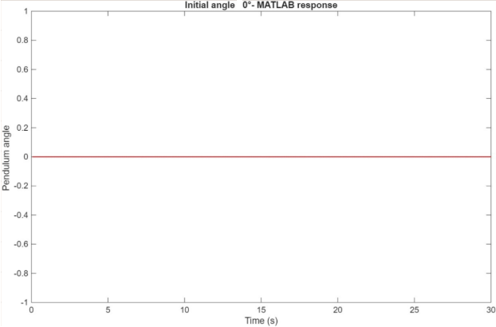
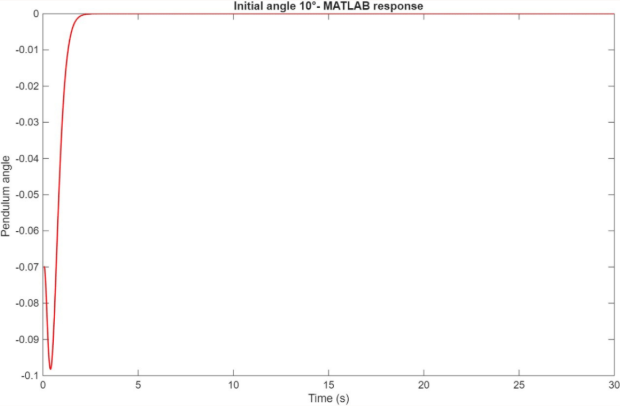
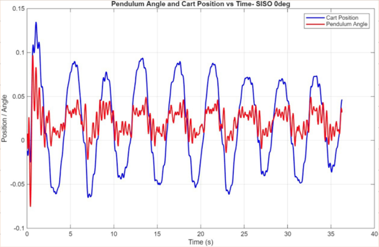
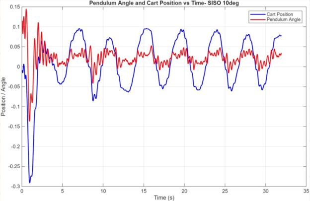

Inverted Pendulum Controller Design (Time Domain)
Designed and implemented time domain controller
for inverted pendulum system.
Problem Statement
The objective of this project is to design a feedback controller in the time domain to stabilize an inverted pendulum mounted on a motorized cart, an inherently unstable nonlinear system. The controller must regulate the cart’s horizontal motion to maintain the pendulum in the upright equilibrium position. In addition to nominal stabilization, the control system is required to ensure robust performance under small angle deviations, varying initial conditions, and mild external disturbances.
Approach
- Began with the linearized state-space model of the inverted pendulum system about the upright equilibrium point. The system dynamics were represented using the standard form.
- Formulated a single-input single-output (SISO) control problem by constructing a virtual output from multiple measurements:
- Defined the output matrix (C) to represent measurable states, enabling position and angle feedback for control and estimation.
- Verified controllability and observability of the system to ensure feasibility of state-feedback control and state estimation.
- Designed a state-feedback controller using pole placement by selecting closed-loop eigenvalues of (A-BK)to satisfy performance requirements:
- Closed-loop stability
- Settling time < 2 s
- Damping ratio ≥ 1/√2
Controller poles were placed near −5 to achieve fast and well-damped dynamics.
- Designed a state observer by placing estimator poles significantly faster than controller poles (around −15) to ensure rapid state convergence without degrading closed-loop performance.
- Implemented the designed controller on the lab setup to validate performance verifying that pendulum maintained performance with the initial condition of 0 degree and 5 degrees.
- Compared the performance of the SISO design with SIMO.
where, the state matrix (A) captures the coupled cart–pendulum dynamics and the input matrix (B) represents actuation through the cart motor.
This allowed reduction of the MIMO system to an equivalent SISO representation suitable for controller design.
- Began with the linearized state-space model of the inverted pendulum system about the upright equilibrium point. The system dynamics were represented using the standard form.
- Defined a single input multi-output system (SIMO) to use both cart position and pendulum angle measurements simultaneously for feedback control, improving regulation compared to SISO.
- • Verified controllability and observability to ensure the system could be fully controlled and all states could be estimated.
- Designed a state-feedback controller using pole placement by selecting closed-loop eigenvalues of (A-BK)to satisfy performance requirements:
- Closed-loop stability
- Settling time < 2 s
- Damping ratio ≥ 1/√2
Controller poles were placed near −5 to achieve fast and well-damped dynamics.
- Designed a state observer by placing estimator poles significantly faster than controller poles (around −15) to ensure rapid state convergence without degrading closed-loop performance.
- Implemented the designed controller on the lab setup to validate performance verifying that pendulum maintained performance with the initial condition of 0 degree and 5 degrees.
- Compared the performance of the SISO design with SIMO.
where, the state matrix (A) captures the coupled cart–pendulum dynamics and the input matrix (B) represents actuation through the cart motor, and C selects multiple outputs for feedback.
Results
Analytical Response
-
Initial Condition Response:
The system remains stable and converges to equilibrium for angular disturbances up to 10°, demonstrating robustness to non-zero initial conditions.
Initial angle 0°-MATLAB response
Initial angle 5°-MATLABresponse
-
Time vs Position & Time vs Angle (Experimental):
For both initial conditions, the pendulum maintains the upright position without sustained oscillations, while cart motion remains bounded. Unlike the smooth simulation curves, the experimental time-response exhibits small fluctuations due to unmodeled dynamics, friction and sensor noise.
Initial angle 0°-Experimentalresponse
Initial angle 5°-Experimental response
System Response
Analytical Response
-
Initial Condition Response:
The system remains stable and converges to equilibrium for angular disturbances roughly up to 10°, demonstrating robustness to non-zero initial conditions
Initial angle 0°-MATLAB response
Initial angle 10°-MATLABresponse
-
Time vs Position & Time vs Angle (Experimental):
For both initial conditions, the pendulum maintains the upright position without sustained oscillations, while cart motion remains bounded. Unlike the smooth simulation curves, the experimental time-response exhibits small fluctuations due to unmodeled dynamics, friction and sensor noise.
Initial angle 0°-Experimentalresponse
Initial angle 10°-Experimental response
System Response
SISO vs. SIMO
Key Observations:
| Metric | SISO-10° | SIMO-10° |
|---|---|---|
| Pendulum swing to stabilize | 0.06° | 0.05° |
| Cart travel to stabilize pendulum | 0.19 m | 0.07 m |
| Settling time | ~3 s | ~2 s |
| Robustness to initial disturbance (0°–10°) | Stable, comparitively larger oscillations | Stable, smoother, smaller oscillations |
SIMO shows improved robustness to initial disturbances, with smaller pendulum deviation, reduced cart displacement, and slightly faster settling compared to SISO.
SIMO demonstrates improved robustness compared to SISO, with smaller steady-state variations in both pendulum angle and cart position, slightly faster settling, and smoother response under identical initial disturbances.
Learnings
- Gained hands on experience in time-domain controller design by implementing and comparing SISO and SIMO control strategies against defined performance criteria.
- Designed the time domain controller using pole placement, translating performance requirements (settling time, damping ratio) into eigenvalue selection.
- Observed the gap between simulation and experimental response, recognizing the impact of unmodeled dynamics, friction, sensor noise, and actuator limits.
Tools Used : MATLAB